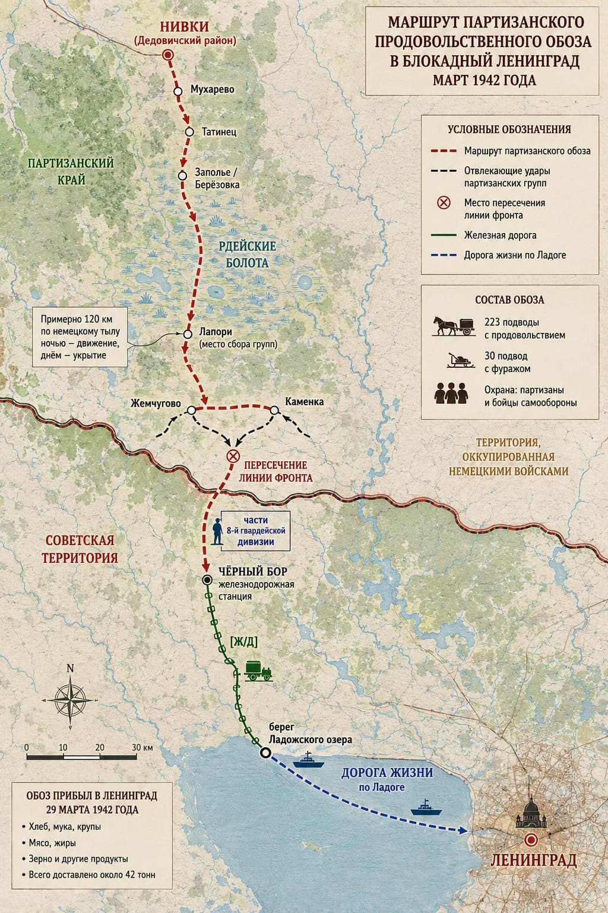

Не давал мне покоя один вопрос из истории ленинградской блокады: санный поезд с продовольствием был доставлен в город через линию фронта с территорий нынешних новгородской и псковской областей весной 1942-го года.
Решил навести справки и уточнить подробности.
Попросил ИИ нарисовать схему движения, и милая девушка любезно предоставила.

Из каких запасов в конце зимы 1942 года деревенские жители составили продовольственный обоз на 223 телеги не представляю. Но ладно.
Как они это сделали в оккупированном Дедовичском районе не представляю. Но ладно.
Поскольку мне незнаком ни один населенный пункт маршрута, решил по ним быстренько пробежаться.
Пошел сверху вниз.
- Нивки. Есть такой.
- Татинец. Есть такой.
- Заполье/Березовка. Не поймешь – есть ли. Пусть будет да.
- Лапори. На Google-map не нашёл.
- Жемчугово. Каменка. Не нашел таких.
- Ж.д. станция "Чёрный Бор". Не существует. Во всяком случае, под таким названием. А вот "Чёрный Дор" существует - и это уже совсем другая история.
- Берег Ладожского озера. Это в районе какого-же населенного пункта? Кобона? Лаврово? Новая Ладога? Не указано. Странная небрежность.
Как же немцы 223 подводы с продовольствием + 30 с фуражом у себя в тылу не разглядели?
А они на 7 групп разделились, отвечают мне.
Ничего себе! Семь групп одновременно прокладывают семь дорог в Рдейских болотах Псковщины!
– А событие точно было? Спрашиваю ИИ.
– Конечно! 29 марта делегация партизан была торжественно встречена в городе.
Михаил Харченко участвовал в операции. Более того, его потом представили к званию Героя Советского Союза. Фёдор Потапов был начальником обоза, Александр Поруценко руководил делегацией и т. д. В источниках сохранились фамилии возчиков, включая более 30 женщин.
И я согласна: если современный текст рассказывает историю как установленный факт, а при проверке обнаруживаются только позднейшие советские пересказы, это повод спросить:
А где первичный документ? Где немецкое донесение? Где советское оперативное донесение? Где документы приёмки груза в Ленинграде? Почему регулярные части Красной армии не двинулись обратно по следам, чтобы не кровью умываться на Невском пятачке, а разом оказаться в Псковской области?
Попросил нейросеть проверить, какие есть сведения в немецких архивах? И она это сделала.
Выглядело это так: нырнет куда-то с головой – вынырнет и ошарашит: (Bundesarchiv) фонд: RH 26-281 — 281. Sicherungs-Division. Эта дивизия в тот период отвечала за безопасность в соответствующем участке тыла группы армий «Север». И опять ныряет туда. (ИИ ныряет, не дивизия)
Выныривает: Vierzig Fässer voller Gefangene! BArch RH 26-281/7 — Bundesarchiv, RH 26-281/7, Kriegstagebuch, 281. Sicherungs-Division, март 1942.
Ей удалось узнать, что в немецких архивах ничего. Но она будет "землю рыть" и впредь.
Попросил её этого не делать. Мне достаточно.
К тому же, по её утверждению, германские журналы велись тщательно, особенно по активности партизан – фиксировался каждый чих.
Она привела замечательное наблюдение: 42 тонны партизанского продовольствия от объема доставленного за зиму 1942 года 271 000 тонн составляют 0,016%. (шестнадцать тысячных процента).
Личные наблюдения.
Встречал по жизни странных людей. Ему говоришь – надо сделать так и так.
- Понял?
- Я все понял очень хорошо.
Делает все наоборот.
Опять объясняешь. Результат тот же.
И так до бесконечности.
Для того, чтобы разобраться со схемой движения партизанского обоза, обратился к искусственному интеллекту.
Машина приступила к делу с энтузиазмом. Результатом становилось появление очередной схемы на карте.
На мои замечания о явных нелепицах нейросеть принимала претензии, искала в сети, делала корректировку и в результате выползала новая схема, еще более несуразная.
После пятого раза я решил - хватит.
Нахожусь в недоумении – она сознательно мне голову морочит или поглупела?
По опыту общения с машиной оцениваю её как великую умницу. Если мнения расходятся, она готова прислушаться к моим доводам, признать свою неправоту и отредактировать свою. Т.е. она разумна, терпима и понятлива. И тут такая упорная глупость. Заявила, мол, не Черный Бор, а Черный Дор! А тот Черный Дор в предместье Твери! Это дорога на Москву!
Задавал ей вопрос: способен ли ИИ на лукавство? Она уверенно отвечала – нет. Только объективная информация на базе найденного в сети и своих алгоритмов.
Однако, меня не отпускает ощущение, что сознательно морочит мне голову. И такое не впервые.
Следует заметить, впрочем, сама она не умеет рисовать и когда требуется обращается к некому DALL-E. А этот DALL-E крепок в своем тупизме: что бы не нарисовал, шерсть встает дыбом.
Она ему дает задание "на словах" — он исполняет, как понял.
Что же получается? Со мной она вразумительная, а ему не в состоянии внятно объяснить элементарное? И потом, она проверяет, что он нарисовал? Это же дичь!
Или они состоят в банде, чтобы людям голову морочить?
А схему, которая висит на стене музея в рамке, найти так и не удалось.